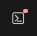

The Explorer area to the left shows an index.mjs file and other files. For this exercise you only need to work with and edit code within the index.mjs file.
The Editor section in the middle is where you will be editing the index.mjs file. One thing that will likely look different from a normal text editor or word editor is that different portions of the code will be colored in different ways. This is called Syntax Highlighting and is useful when working in a code file to quickly identify the different parts of the code.
The Browser section is here on the right. You can show the Console by clicking the Inspector Button icon in the top right. The Console will appear below the browser.
The Console is where you will see output from any console.log code you write. There are further details in the index.js on the console.logs, how/where to use them.
If index.mjs is not already a tab available in the Editor part of the interface after you fork the assignment, double click on the index.mjs file name in the Explorer panel on the left to open it. When you write code in the index.js file, the code will not run until you have saved (or until your file autosaved). The results of running your code will be seen in the Console panel to the bottom right. If your code runs and runs and eventually gives you an error or time out message, you may have an infinite loop in your code so double check your code.
You should use `console.log` to output values in the code when it is run to assist in debugging. For example, if you are having an issue with something related to the `firstName` variable you might add this line of code right below the variable to see what the actual value is at that point
console.log('firstName variable is: ',
firstName)`
Then check the output in the Console. Last week you were given some console.log's to start with then created your own. This week you'll make them all yourself. Be sure you follow that pattern for all of the questions.
Refer to your lessons materials, contact class mentors, or reach out to your cohort leader(s) if you need any help. Happy coding!
As you did last week, you'll need to fork this code to get started. Click the gray "Fork" button in the top right to make a copy of this starter code for yourself. Make sure your name and "(forked)" appear at the top center of the page to be sure you're working within your forked copy of code. Double click the index.mjs file in the Explorer panel and start your assignment.